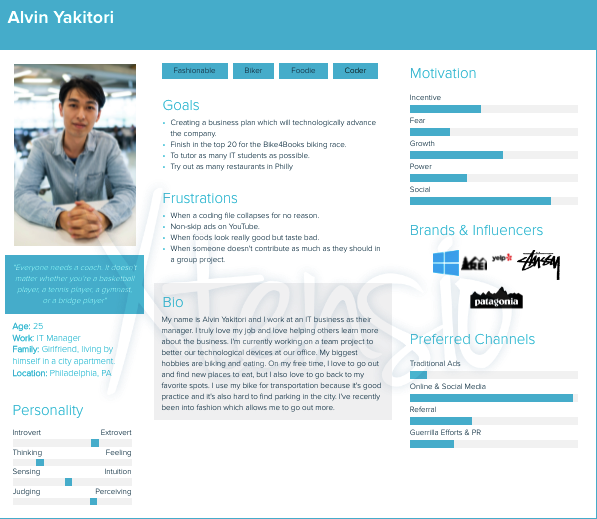
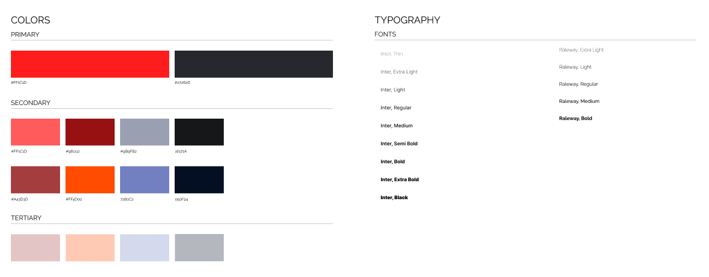
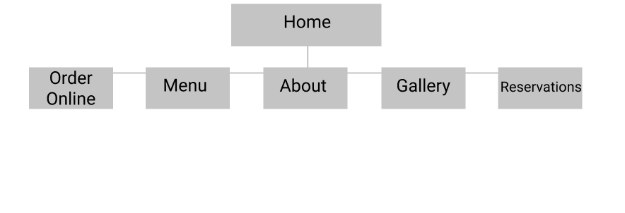
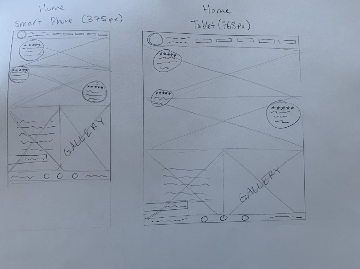
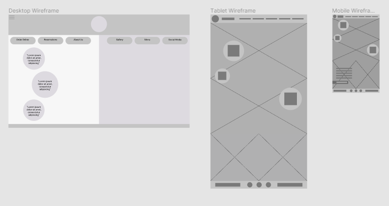
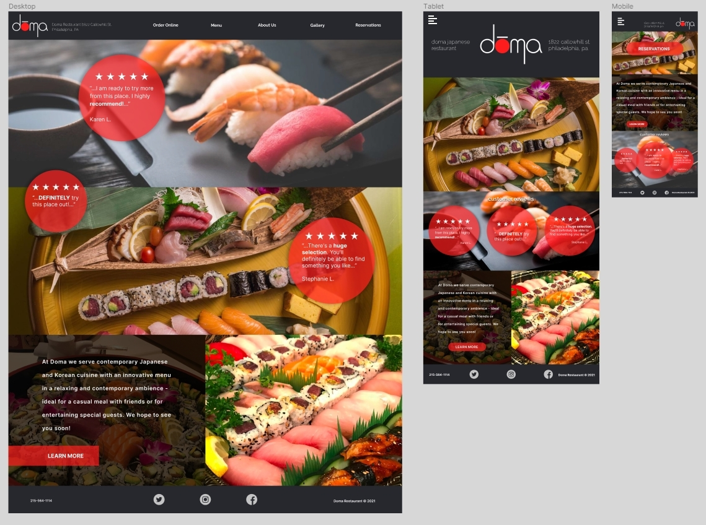
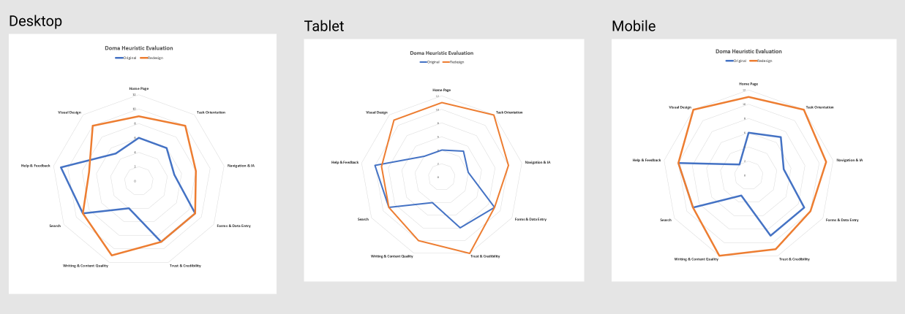

Overview
I redesigned Doma Restaurant's website for my IDM-211 Class and created an mobile, tablet, and desktop prototype for my IDM-212 Class using Figma.
Initial Goals
The first goal I had for the website redesign was to change the overall “template” of the website. Doma is a modern-contemporary restaurant. The website’s template for the restaurant needs to match the in-person atmosphere and vibe. I will also have to change the color scheme to match Doma’s logo. The second goal I had was to add an “About Us” page. Doma has been a local Philadelphia restaurant for almost eleven years. Customers are bound to be curious about the inspiration and innovation of the restaurant and the owners. This “About Us” page will create a greater connection between the restaurant and the community. The third goal I had for the website was to make the homepage more appealing. The homepage is the most crucial part of a website because it is the first thing customers view. The images used on the homepage are stock photos. These photos need to be replaced because it is the first thing people view when the website loads in. The text and font on the homepage also need to be replaced.
Target Audience
The target audience caters to people who are younger and make an above average income. They should also enjoy trying different foods and spending money to enjoy their food.

Colors and Typography
I personalized the typography and color scheme to match Doma's sleek atmosphere. I used 'Inter' and 'Raleway' for the primary fonts and used a bright red and dull grey color to contrast well with the logo.

Sitemap
For the sitemap, I wanted to create an easy navigation for the restaurant's website. Since most user's know what they want to view when visiting a restaurant's website. Therefore, I didn't want to overcomplicate a simple process.

Sketches
I had sketched multiple ideas for the redesign of the home and menu pages. These ideas were based on my desktop prototype that I had worked on previously.

Low-Fi Wireframes
The low fidelity wireframes were roughly based on my sketches. This process had given a good idea on where I was headed for the High Fidelity Mockups.

Solution
After hearing critiques from my peers and professor, I looked back on my initial goals and reflected on the main problems. Overall, I redesigned Doma’s website from the tacky template vibe to their modern-contemporary aesthetic that they emanate. The main problems of the original homepage were the website design, the iconography, the imagery, the content, the color scheme, and the text. I changed the website design to give it a sleeker look by adding sharp images, circular objects, and a strong font. I also added an about us page in order to give customers a better understanding of the restaurant history and to create a better bond between the restaurant and their customers. The last page I redesigned was their menu. The menu was not a part of the website itself, rather it was another source that made the menu. This made the menu look like a template and very unprofessional. I created an entire new page for the menu that provided a description of each item, as well as pictures to give the customers a better idea of what they were reading. The redesign of Doma’s website better suits the aesthetic of the restaurant, as well as making the user experience easier for the customer.
High-Fi Wireframes
The results of critique from my professor and classmates were extremely helpful in the process of creating these high fidelity wireframes. The prototypes are interactive in Figma and will be linked below.

View Desktop Prototype here
View Mobile Prototype here
View Tablet Prototype here
Heuristic Evaluation
In the beginning of this project, I asked my friend to take a series of questions pertaining the original build of the Doma website. The questions were related to the home page, the visual design, the help & feedback, the search, the writing & content quality, the trust & credibility, the forms & data entry, the navigation & IA, and the task orientation of the site. They were then asked to answer the same questions but about my redesign of the website. You can see that the redesign has more positive feedback than the original build.
